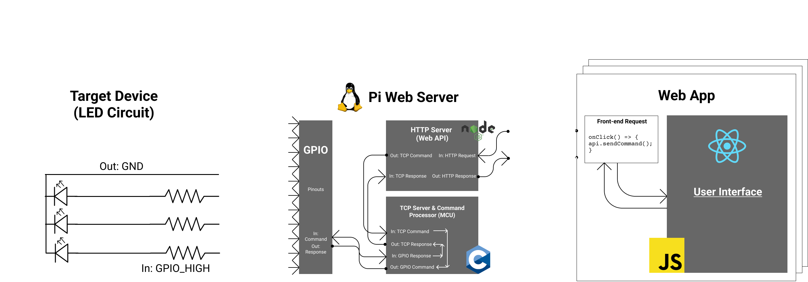
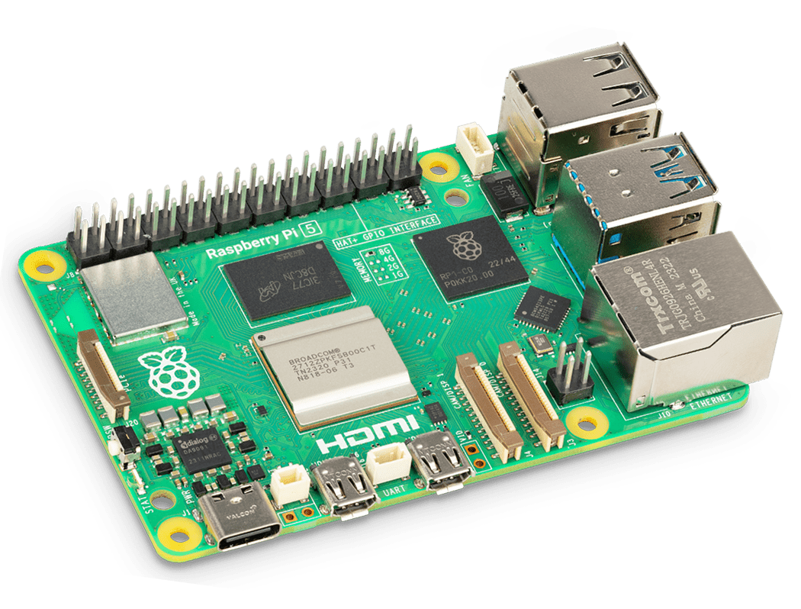
Our client partnering with Iowa State University is looking to streamline its
testing infrastructure for FPGAs and
other hardware devices that have many
layers in the software stack. These layers complicate the testing process for their
engineers, requiring additional time
to set up testing environments properly. To solve this resource problem, our team
will design and implement a web-based
frontend interface to a microcontroller running Linux, abstracting the testing
environment layer from their engineers to
accelerate the testing process and enable easy distribution of one interal testing
tool hosted on the web.
As the team's project manager, I facilitate the design and prototyping of our
product and report to our client and faculty advisors. Additionally, I assist with
the design and development of our product as needed to ensure on-time delivery. I've
gained skills in embedded systems, management, leadership, designing for users, and
problem-solving.
Technical Specifications
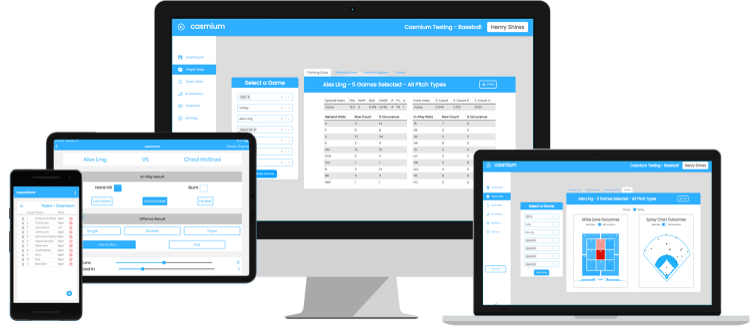
I am a co-founder and the CEO of Casmium, a sports technology software startup founded in 2020 that's revolutionizing the world of baseball and softball with a simple Software-as-a-Service to streamline how teams collect, report, and analyze stats. Filling a crucial gap in the market, Casmium offers an affordable and user-friendly app to collect, report, and track crucial stats, saving coaches hours of time each season, empowering athletes with insightful analytics about their performance, and providing resources to parents to help their students in the recruitment process. By catering to a wide range of non-professional teams with limited resources, including often-overlooked softball teams, Casmium sets itself apart from competitors. With a mission to democratize sports statistics, Casmium is on track to transform the industry, already working with central Iowa high school teams and little league teams across Iowa, Colorado, and Georgia, while projecting significant growth in the near future.
Technical Specifications
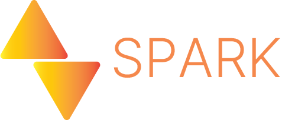
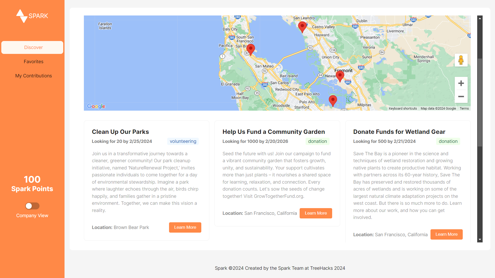
Spark is a social platform that allows organizations to create campaigns encouraging
people
to partner with them on projects by volunteering time, money, and materials. Our
platform
works in two parts. First, organizations post
their campaign, which is then added to a
database holding all posted campaigns. Next, contributors can browse available
campaigns to find one(s) that resonate
with their goals. Once they identify organizations that do so, they can identify
which of the organization's goals they
are inspired to contribute to and gain spark points. These spark points work to (1)
allow contributors to see the
tangible impact they are having as a continuous endeavor and (2) motivate these
individuals to continue their
contributions with more organizations.
I worked on designing and building the frontend for Spark's web application and
helped present our MVP to judges at Stanford TreeHacks 2024. And in the Hackathon
experience, I learned to work with a team on a solution at a fast pace while
considering how our product solves a sustainability problem.
Technical Specifications
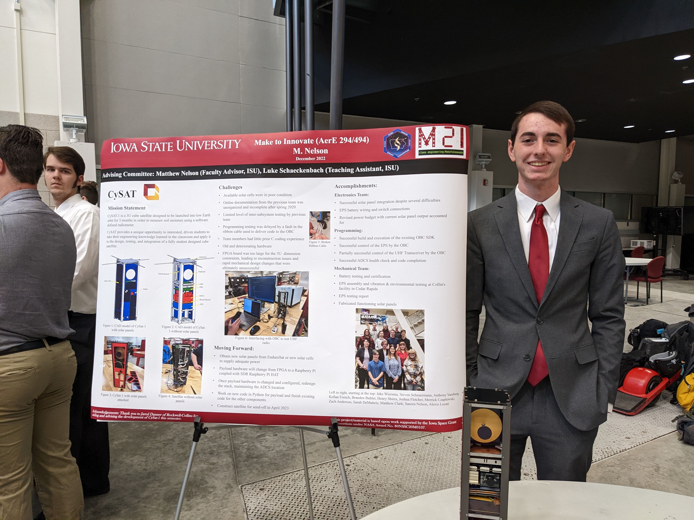
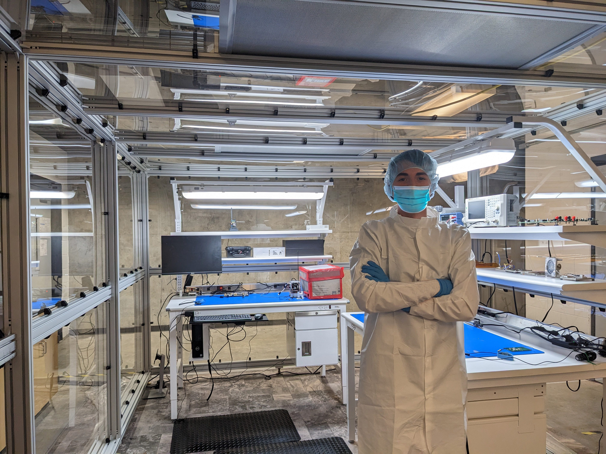
CySat is Iowa State's NASA CubeSat program designed for students of all engineering
majors to gain experience with astronautics and solve real-world scientific
problems. NASA provides educational institutions with a partnership to create a
working satellite with a NASA-given mission in exchange for a free
launch to space. At ISU, CySat's current mission (CySAT-1) is responsible
for measuring soil moisture content using a software-defined radio (SDR) in Low
Earth Orbit (LEO). CySAT-1 has been developing at ISU for nearly ten years,
with the final launch handoff anticipated for Summer 2024.
During my time
on the project, I helped integrate software with satellite electronics to
carry out the mission in space. My work included updating, troubleshooting, and
documenting embedded
code on the satellite's mission computer and creating a radio
communication link between the satellite and the ground. The communication link uses
amateur radio to send AX.25 packets between an onboard UHF transceiver
and an SDR on the ground. These packets contain either ground station command
requests, satellite command responses, or the satellite returning soil
moisture measurement data. See my technical report below for a detailed description.
Technical Specifications
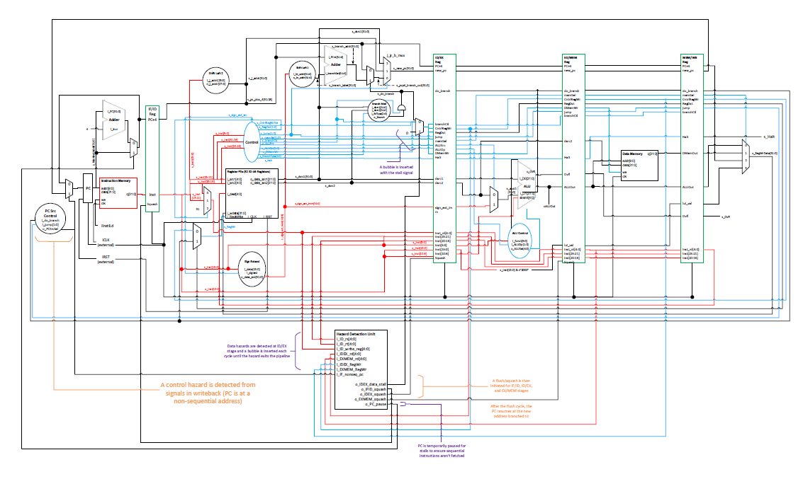
A semester-long project where my colleague Tony Manschula and I designed three processors based on the MIPS Instruction Set Architecture (ISA) to understand the way processors are constructed and which design concepts (single-cycle versus pipelining) perform the most efficient. We applied concepts learned in CPR E 381 such as VHDL description language, MIPS assembly programming, processor pipelining, hazard detection and avoidance, and several in-depth applications of digital logic components. Our efforts resulted in three working VHDL designs that successfully run a MIPS program after months of critical thinking and design troubleshooting. We also were able to synthesize our designs and compare maximum clock speeds between all three designs. See the GitHub repository below to view the full project report and source code.
Technical Specifications
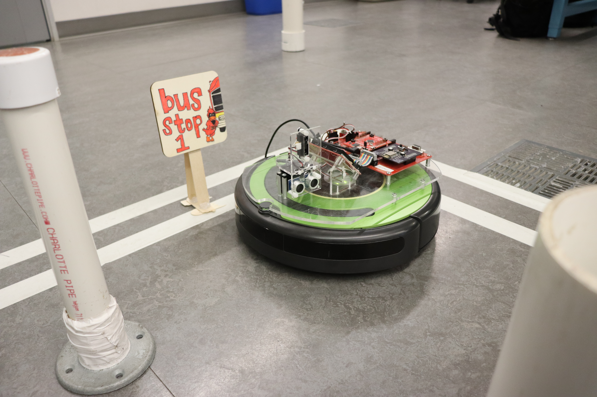
I combined my attained knowledge of digital logic and software engineering and collaborated with a team to design and prototype a small-scale automated public transit system. Using a iRobot Roomba Education kit, an on-board Microcontroller, and sensors, we designed a working robot to model the Ames "CyRide" system as if it were entirely self-driving. My team learned how to effectively work together to solve our complex engineering challenge and apply the tools and technologies we were given in class to present a working demo of our idea. To learn more, see our project proposal linked below.
Technical Specifications
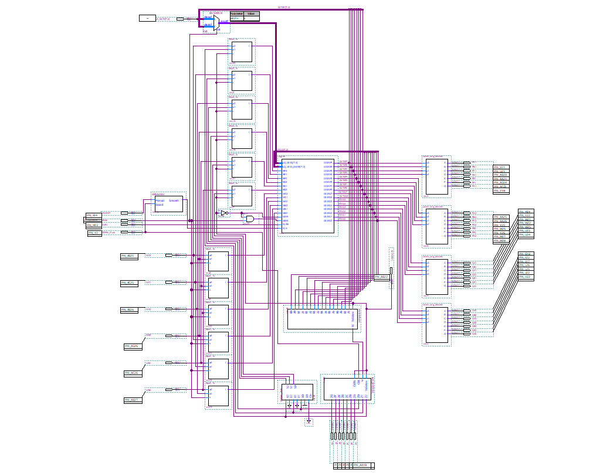
For the culmination of my Digital Logic class, I utilized an Field Programmable Gate Array (FPGA) to allow a user to store two lists of information and swap values between them. This program has the potential for real-world applications like automating shopping lists, tasks lists, and agendas. A user is allowed to enter in 16 numbers (0-15) of their choosing using on-board switches and save them into one of two lists called registers. The user can then swap saved values between registers as desired, preserving the values they entered in the new register locations. I showcased my understanding of designing logic circuits in both Intel Quartus Prime CAD software and with the Verilog hardware description language. To learn more, read my project report below.
Technical Specifications
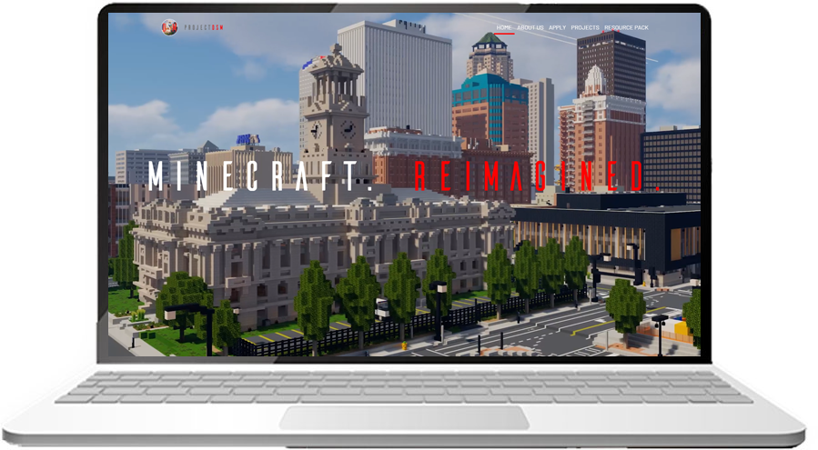
Sean Eddy, the creator of a realistic re-creation of Downtown Des Moines, Iowa in the popular video game, Minecraft, invited me to assist him in hosting and marketing his project to the public. While he focuses on his design and 3D, digital modeling, I am primarily involved in day-to-day management of logistics such as web hosting, domain/DNS management, server hosting, and software maintenance. I've programmed a couple of features to make our community feel unique, including a plugin to sync the game's time and weather conditions with real-life Des Moines. Our project managed to make our local news and sparked players across Central Iowa to visit Sean's work.
Technical Specifications
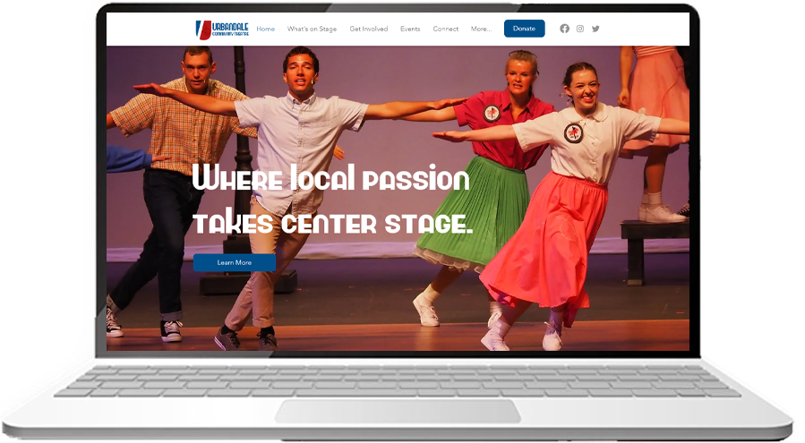
For the local community theatre in Urbandale, IA, I designed and deployed a website and logos to use for marketing and advertising their summer theatre production. The organization needed a website overhaul after previously using a poorly maintained WordPress custom site and CPanel host/backend. To ensure the Board of Directors could maintain the site in the long term with their limited technical background, I made sure to transfer their resources to no-code applications with minimal tech debt that are suitable for users of all kinds, particularly small business owners like the UCT Board.
Technical Specifications
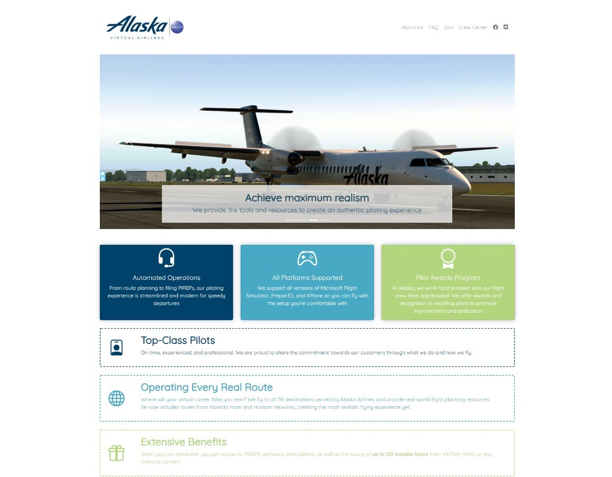
I was commissioned to design a website for promoting Alaska Virtual Airlines: an online community of flight simulator players mimicking the real-world operations of Alaska Airlines. The website contains information about the airline's operations, staff, and how to apply for a virtual pilot position. I developed an intial design (that was later tweaked) including live airline statistics linked to AlaskaVA's information system. These can be found under the "Creating an Airline" section.
Technical Specifications
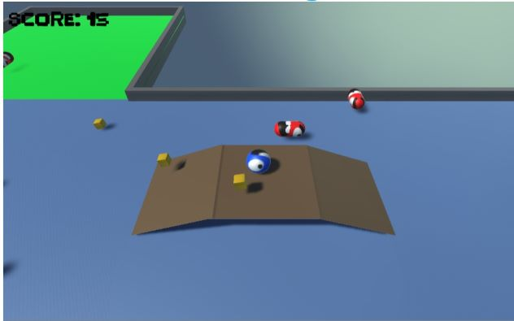
Feed The Ball was my introduction to the world of Unity 3D game
design
and C# programming. My goal was to create a simple, yet entertaining, 3D platformer
and
later on submitted this project to the College Board for the AP Computer Science
Principles exam.
I further expanded this project by attempting two distinct goals: accept donations
from players to essentially "develop for charity" and attempt to implement a machine
learning model in some way. My idea was to create a model that would generate
additional game levels based on the player's skill. This did not end successfully,
however I gained plenty of fundamental knowledge about Machine Learning and how to
implement models with source code.
Technical Specifications
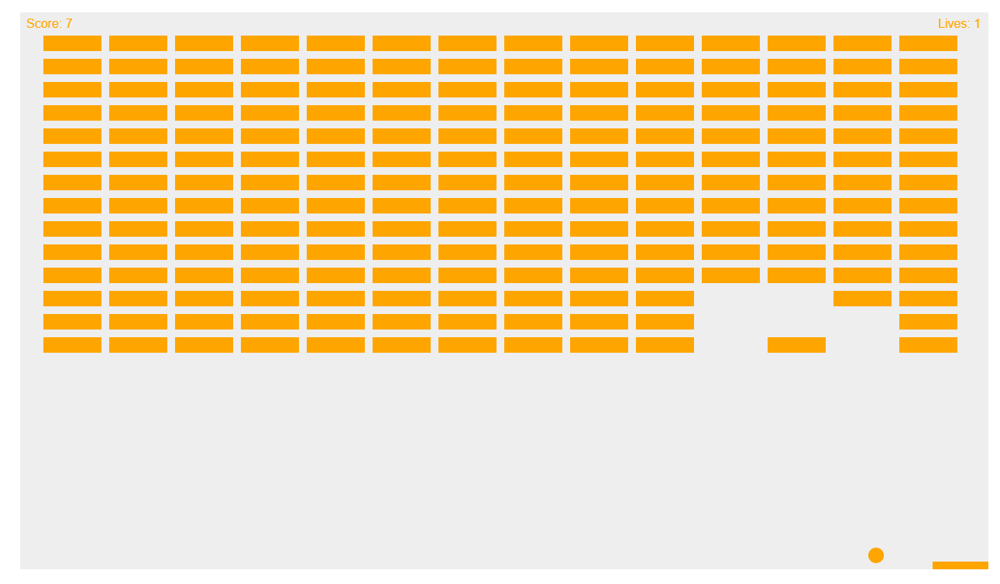
For more source code and hobby projects, check out my work on GitHub. I've worked on a variety of software projects, big and small, to broaden my toolbox in numerous technologies and practice critical engineering skills.
Technical Specifications